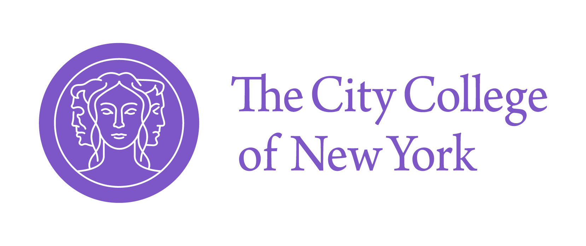
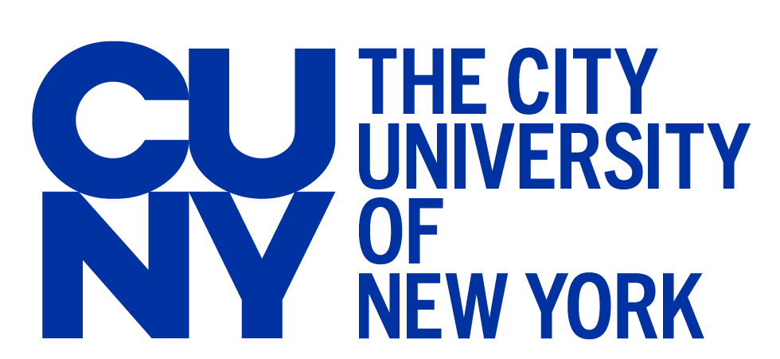

EARS-CONN 2027 — NEW YORK CITY — JANUARY 19–22, 2027 — Embodied AI and Remote Sensing for Sustainable, Safe Connected Cities
EARS-CONN 2027 — NYC — January 19–22
Embodied AI and Remote Sensing for Sustainable, Safe Connected Cities (EARS-CONN)
Conference Agenda
Two plenary days at the Grove School of Engineering, The City College of New York. Day 1 builds the sensing and embodied-AI foundations of Digital-Earth. Day 2 turns to urban applications and closes with the Innovation Stage, where selected startup and innovation applicants pitch for a prize. The hands-on workshop is a separate program on January 21–22.
Conference days: January 19–20, 2027Venue: Grove School of Engineering, CCNYFormat: One plenary track
Day 1
Day 2 and Innovation Stage
Times are provisional. A downloadable PDF will be posted on this page later. Names marked “to be announced” are open slots.
Day 1
Tuesday, January 19, 2027
Foundations: remote sensing, embodied-AI, and the Digital-Earth stack
Moderator: Mitchell Goldberg , The City College of New York / NOAA-CESSRST
Time
Session
Speaker(s)
8:30 AM – 9:00 AM
Registration and coffee
9:00 AM – 9:15 AM
Welcome remarks
Mitchell Goldberg
The City College of New York
Reza Khanbilvardi
The City College of New York, host
9:15 AM – 10:00 AM
Keynote
Mitchell Goldberg
The City College of New York / NOAA-CESSRST
10:00 AM – 10:30 AM
Computational vision from the street to the satellite
Zhigang Zhu
The City College of New York
10:30 AM – 10:45 AM
Break
10:45 AM – 11:15 AM
Mobile robots and UAVs for urban sensing
Jizhong Xiao
The City College of New York
11:15 AM – 11:45 AM
Safe autonomous systems
Hamid Jafarnejad Sani
Stevens Institute of Technology
11:45 AM – 12:15 PM
Trustworthy Robotics and Embodied AI for a Safer and Smarter World
Kaiyan Yu
SUNY Binghamton
12:15 PM – 12:45 PM
Physical AI and robot foundation models for human-robot teaming
Madi Dian
Saint Louis University
12:45 PM – 1:45 PM
Lunch
1:45 PM – 2:15 PM
Infrastructure sensing: bridges, transportation, and non-destructive evaluation
Adriana C. Trias Blanco
Rowan University
2:15 PM – 2:45 PM
Engineering the Brain of Urban Mobility: AI-Powered Transportation Digital Twins
Xuan (Sharon) Di
Columbia University
2:45 PM – 3:00 PM
Break
3:00 PM – 3:45 PM
Panel: Embodied AI and robots in the city
Jizhong Xiao
Hamid Jafarnejad Sani
Kaiyan Yu
Madi Dian
Xuan (Sharon) Di
Mitchell Goldberg, moderator
3:45 PM – 4:15 PM
Open discussion and first-day wrap-up
Mitchell Goldberg
The City College of New York
Day 2
Wednesday, January 20, 2027
Applications, assurance, and the Innovation Stage
Moderator: Masoud Ghandehari , New York University
Time
Session
Speaker(s)
8:30 AM – 9:00 AM
Coffee
9:00 AM – 9:45 AM
Keynote: Climate resilience of urban infrastructure
Masoud Ghandehari
New York University — C2SMART
9:45 AM – 10:15 AM
Cities under disruption: mobility, disasters, and resilience
Takahiro Yabe
New York University
10:15 AM – 10:45 AM
Forecasting climate-driven geohazards
Te Pei
Stony Brook University
10:45 AM – 11:00 AM
Break
11:00 AM – 11:30 AM
Climate risk intelligence: Digital-Earth as a risk tool
Sarah B. Kapnick
J.P. Morgan
11:30 AM – 12:00 PM
Cloud-scale geospatial analytics for Digital-Earth
Sina Kashuk
Fused.io
12:00 PM – 12:30 PM
Planning sustainability with 6G networks
Mata Khalili
Nokia Bell Labs
12:30 PM – 1:30 PM
Lunch
1:30 PM – 2:15 PM
Panel: Climate risk, resilience, and Digital-Earth
Sarah B. Kapnick
Masoud Ghandehari
Te Pei
Takahiro Yabe
United Nations Office for Digital and Emerging Technologies speaker to be announced
2:15 PM – 2:30 PM
Break
2:30 PM – 4:30 PM
Innovation Stage: startup and innovation pitches for the EARS-CONN Prize
Nia René, opening
NOAA
Wendy Chen
PureCipher, pitch host
Detail below
Innovation Stage
Selected Digital-Earth Challenge teams and startup applicants pitch on stage. A jury scores the pitches and announces the EARS-CONN Prize the same afternoon. Pitch order will be posted after shortlisting.
Time
Session
Speaker(s)
2:30 PM – 2:40 PM
Stage opening and prize criteria
Nia René
NOAA
2:40 PM – 2:55 PM
Place-based AI for New York City
Paul Johnson
Pull City
2:55 PM – 3:10 PM
Safety architecture for autonomous systems
Alireza Abbaspour
Qualcomm
3:10 PM – 4:10 PM
Pitches by selected startup and innovation applicants
Wendy Chen, host
PureCipher
Applicants to be announced
4:10 PM – 4:30 PM
Jury deliberation, prize announcement, and close
Jury to be announced
Hands-on workshop, January 21–22
The Autoware workshop stays on its own schedule: vehicle stack, sensor fusion, and a data-fusion hackathon. It is built on top of open-source projects and helps build Digital-Earth and sustainable cities by providing high-resolution data and analytics to stakeholders. It is not part of the two-day plenary agenda above.
Workshop details
Open slots: the United Nations panelist, the Innovation Stage jury, and the pitch lineup. Every other name is on the current speakers list . Reza Khanbilvardi joins the Day 1 welcome as a host, and organizer Nia René opens the Innovation Stage.